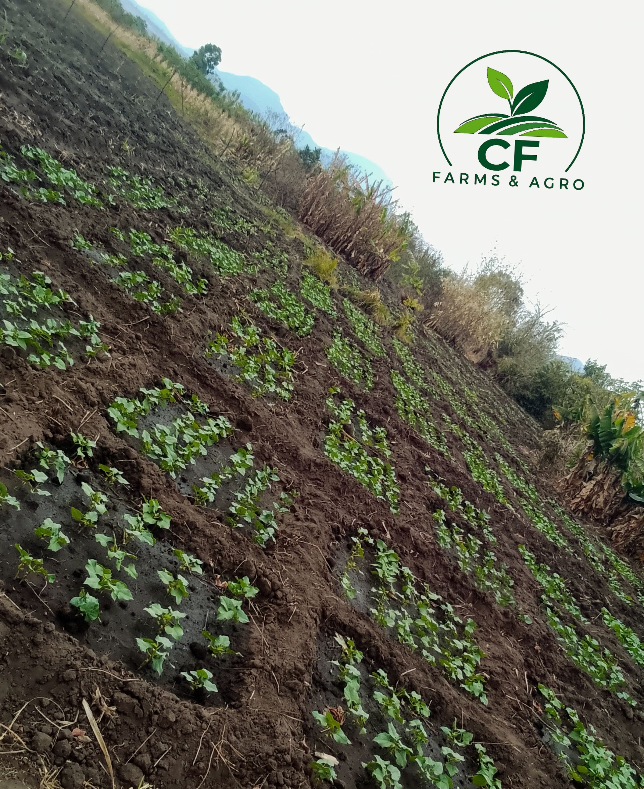
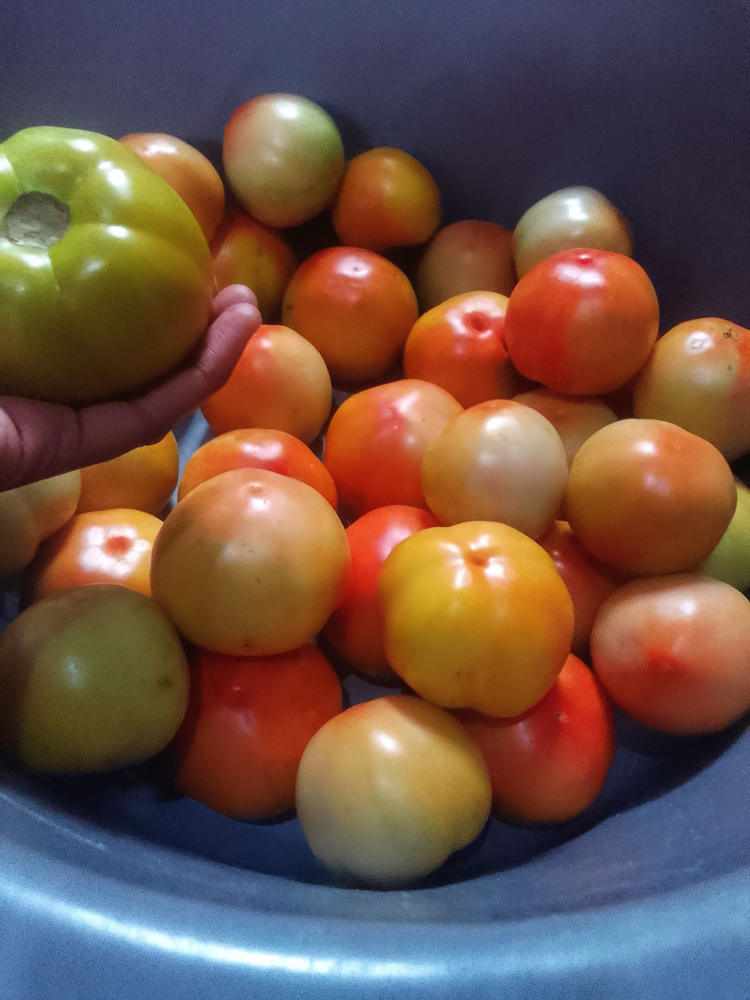
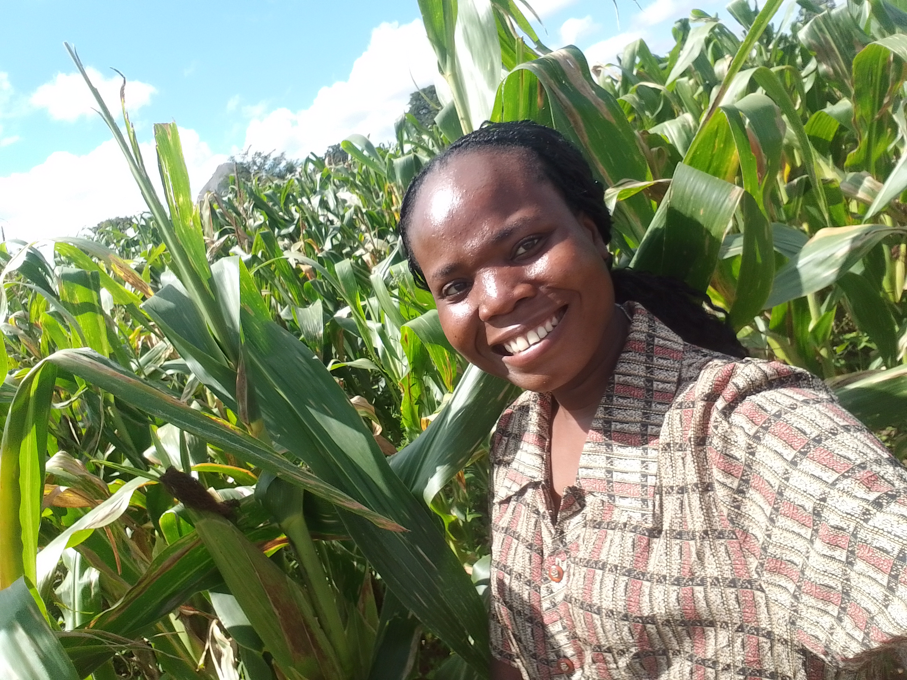
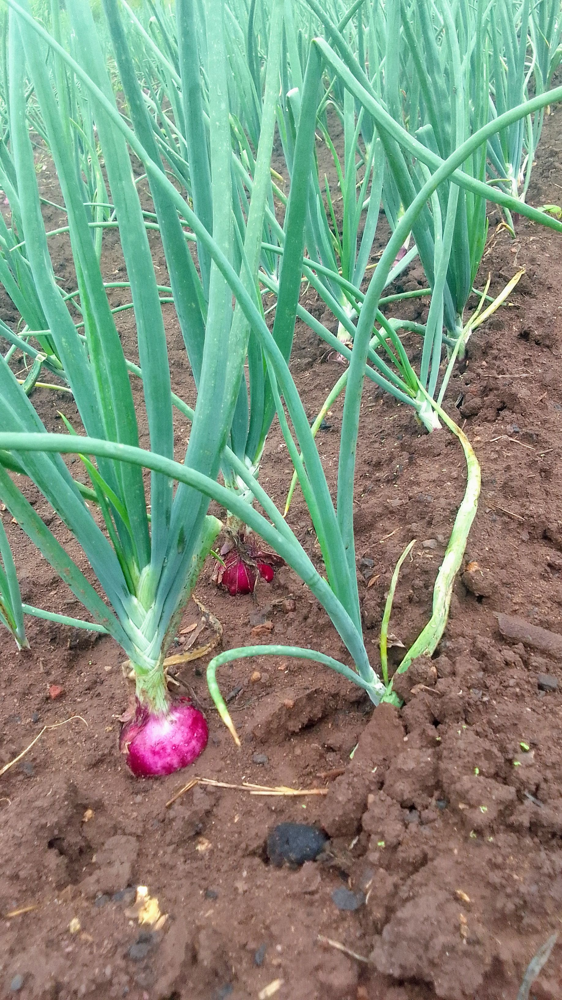
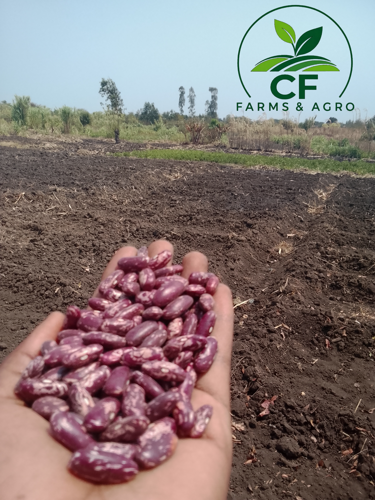
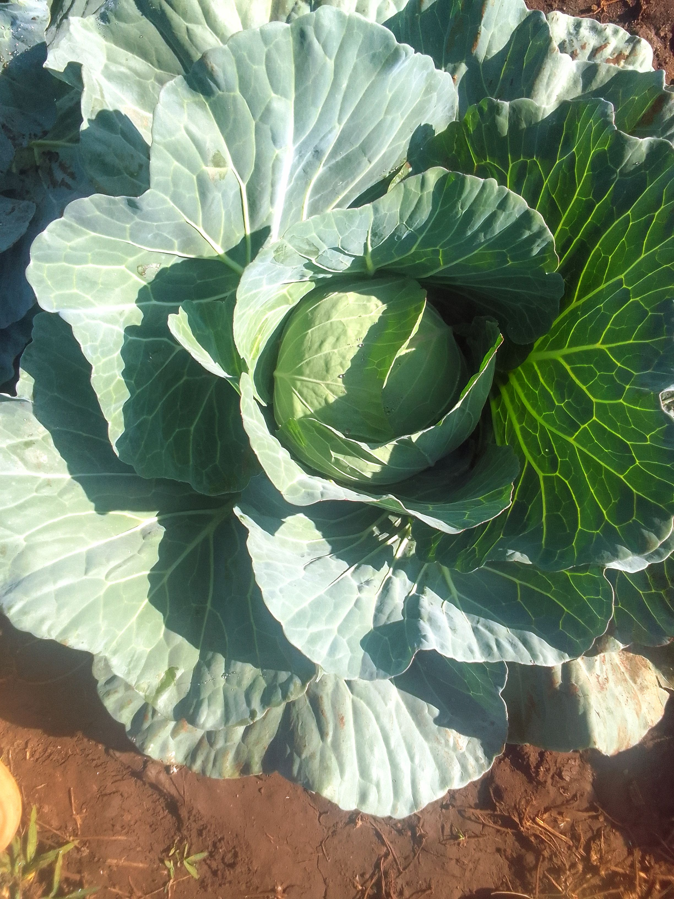
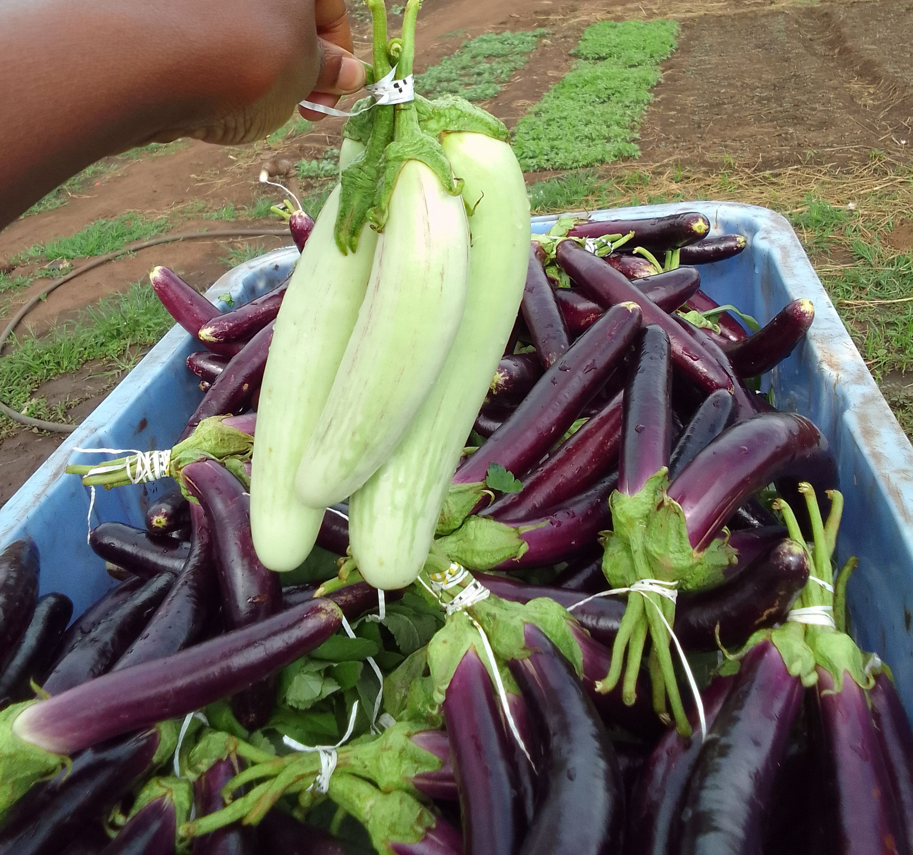

Our Vision
To become a competitive and sustainable agribusiness contributing to food security, employment creation and the transformation of African agriculture.
Growing Food. Building Futures.
Cultivating opportunities through agricultural production, irrigation and climate-smart farming. From Mitundu, Lilongwe, we are working towards a productive, resilient and commercially sustainable agricultural enterprise.
Building businesses, creating opportunities and strengthening communities through agriculture.

CF Farms & Agro is a youth-led agribusiness established in 2025 and based in Mitundu, Lilongwe, Malawi.
We focus on the production and supply of agricultural produce, with an emphasis on irrigation, climate-smart farming and improved agricultural practices.
Our business was established to contribute to food security, create economic opportunities and demonstrate that agriculture can be a commercially viable and attractive sector for young people.
Discover What Drives Us →To become a competitive and sustainable agribusiness contributing to food security, employment creation and the transformation of African agriculture.
To produce and supply agricultural produce through sustainable and climate-smart farming practices while creating opportunities for young people.
To show that farming can be commercially viable, scalable and attractive to the next generation of entrepreneurs.
We combine agricultural production, improved farming practices and market-oriented decisions to build a commercially sustainable enterprise.
Cultivation of food crops, legumes and horticultural produce for household and commercial markets.
Explore Products →Using irrigation to support production beyond the rainy season and reduce dependence on seasonal rainfall.
Learn Our Approach →Applying improved production practices that support productivity and strengthen resilience to changing climatic conditions.
Discover More →Supplying produce to customers and developing reliable commercial relationships and market access.
Make An Enquiry →Exploring opportunities in production systems, post-harvest handling, value addition and business expansion.
Explore Our Plans →Our production priorities are guided by market demand, seasonal conditions, available resources and opportunities to improve productivity.

HORTICULTUREFresh agricultural produce for household and commercial markets.
Enquire About This Product ↗
FOOD CROPSAn important food crop within our agricultural production portfolio.
Enquire About This Product ↗
VEGETABLESPart of our vegetable production and agricultural supply activities.
Enquire About This Product ↗ ROOT CROPS
ROOT CROPS
Included in our diversified food crop production portfolio.
Enquire About This Product ↗
LEGUMES
HORTICULTURE
VEGETABLES SEASONAL PRODUCE
SEASONAL PRODUCE
Other vegetables and food crops according to seasonal conditions and customer demand.
Enquire About This Product ↗We believe the future of agriculture depends on productive, commercially driven and resilient farming systems. Our approach brings together four important priorities.
Improving production through better farming practices, irrigation and efficient use of resources.
Reducing reliance on rainfall through irrigation and adopting practices that respond to climate variability.
Aligning production with customer demand and strengthening access to local markets.
Demonstrating agriculture's potential to create meaningful enterprise and employment opportunities for young people.
We serve customers in Mitundu and the wider Lilongwe market.
Individual food and produce buyers.
Vegetable vendors and retail businesses.
Restaurants and food businesses.
Institutions and other produce buyers.
Since our establishment in 2025, we have continued to develop our production activities and commercial operations.
Established a youth-led agribusiness in Mitundu, Lilongwe.
Developed crop production activities with an emphasis on irrigated agriculture and improved farming practices.
Built relationships with buyers across local markets and continued to develop the customer base.
Selected for the Mastercard Foundation's Fund for Alumni Startups (FAST) Build programme, supporting the development and growth of youth-led enterprises.
We aim to build an enterprise that contributes beyond production by creating value for customers, young people and surrounding communities.
Contributing to the availability of locally produced food.
Creating opportunities for young people through agricultural enterprise.
Supporting women's participation in agricultural and economic activities.
Promoting irrigation and improved practices that can help reduce exposure to rainfall variability.
Building a market-oriented enterprise and exploring opportunities to expand market access.
Our ambition is to grow into a competitive and diversified agribusiness by strengthening our production base, improving operational systems and expanding customer reach.
We welcome collaboration with development organisations, financial institutions, agricultural institutions, private-sector businesses, investors, suppliers and other stakeholders interested in advancing sustainable agriculture.
We are particularly interested in partnerships that support agricultural innovation, access to finance, technology adoption, market access, value addition and youth entrepreneurship.
Discuss a Partnership ↗Whether you are a customer, supplier, investor or potential development partner, we welcome the opportunity to connect.
Reach out to CF Farms & Agro using the contact details below.
Tell us a little about what you are looking for and we will help you get in touch with our team.